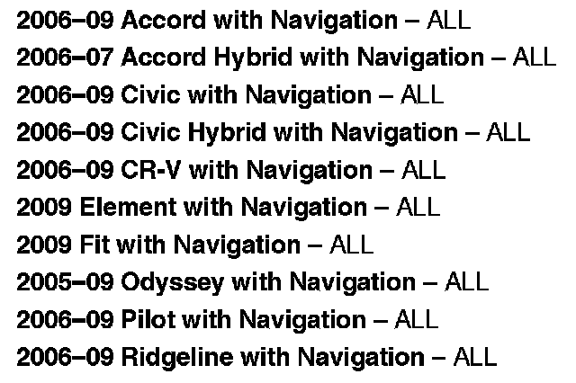
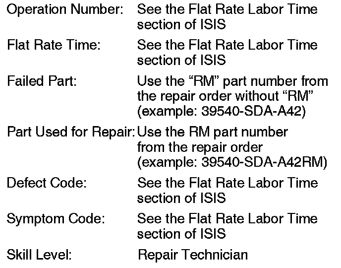

Instruments - Time On Display Randomly Changes
08-084November 4, 2008
Applies To:
See VEHICLES AFFECTED
Time on Display Changes Randomly
SYMPTOM
The customer notices that the clock shown on the subdisplay, the audio unit, or the navigation screen randomly changes time, but never by exactly 1 hour.
PROBABLE CAUSE
There is a problem with the real-time clock circuit in the navigation unit.

VEHICLES AFFECTED
CORRECTIVE ACTION
Replace the navigation unit with a remanufactured unit.
PARTS INFORMATION
For information on navigation unit ordering, see Service Bulletin 06-001, Audio, Navigation, and RES Unit In-Warranty Exchange, and Audio and DVD Player Out-of-Warranty Repair.

WARRANTY CLAIM INFORMATION
In warranty:
The normal warranty applies.
Out of warranty:
Any repair performed after warranty expiration may be eligible for goodwill consideration by the District Parts and Service Manager or your Zone Office. You must request consideration, and get a decision, before starting work.
DIAGNOSIS
NOTE:
If the customer complains the clock jumps by an hour, this bulletin does not apply. It is likely one of the following:
- A time zone issue. If the customer lives or works close to a time zone boundary, the clock may jump forward or back by one hour. Select Setup, then Clock Adjustment, and make sure Auto Time Zone is set to OFF.
- Daylight saving time issue. Refer to Service Bulletin 07-026, Navigation Software Updates for Daylight Saving Time (DST), DVD Read Error Message, and Other Listed Symptoms. After applying the bulletin, select Setup, then Clock Adjustment, and make sure Daylight Savings is set to ON.
When the symptom is occuring, typically when the ignition switch is first turned to ON (II), press the SETUP button, then select Time Adjustment.
Is the clock time displayed the same incorrect time as the clock adjustment screen, and do they jump together?
Yes - Go to REPAIR PROCEDURE.
No -
- If the symptom cannot be duplicated, it is an intermittent failure and the vehicle is OK at this time. If the vehicle returns with the same complaint, go to REPAIR PROCEDURE.
- If the times are different between the navigation time adjustment screen and the sub-display or audio unit display, this bulletin does not apply. Continue with normal troubleshooting.
REPAIR PROCEDURE
1. Replace the navigation unit:
- Refer to section 23 of the applicable service manual, or
- Online, enter keywords NAVI REMOVAL, and select Navigation Unit Removal/Installation from the list.
2. To avoid comebacks, check online, and apply any navigation patches or software updates for the navigation unit. Online, enter keyword SOFTWARE and select any applicable service bulletins from the list.

Disclaimer